KOFI is a monoline display typeface inspired by the Kofi Aromo coffee
franchise in Activision Blizzard's Overwatch. A full set of letterforms, numbers and
punctuation were derived from a ten-charactered logo, which only existed for the purpose of
set-dressing
the in-game world of Numbani. I saw this an interesting opportunity to breathe new life into it,
given
the logo for the franchise was very unique to its setting and the developers at Activision never
capitalized on its potential.
An expanded brand identity for Kofi Aromo is in development and
will use KOFI as its primary typeface.
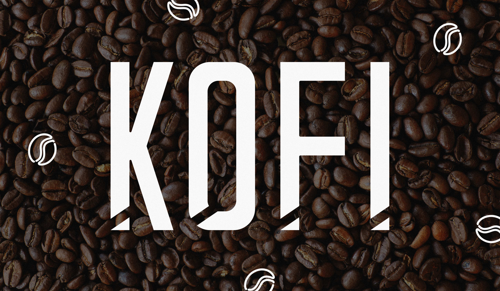
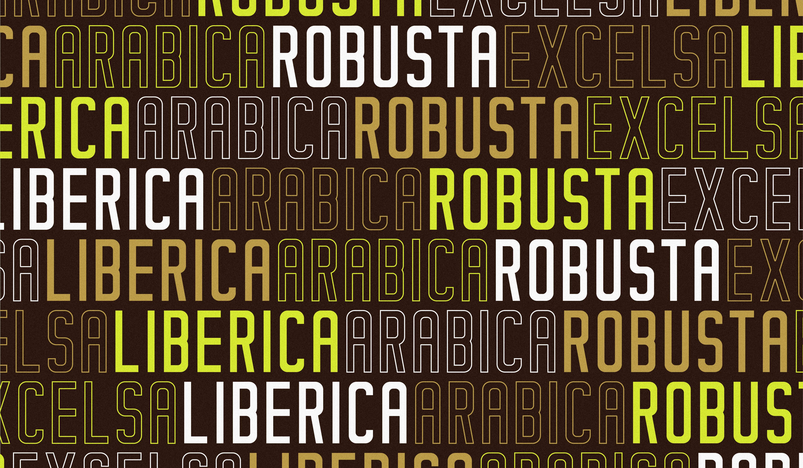
 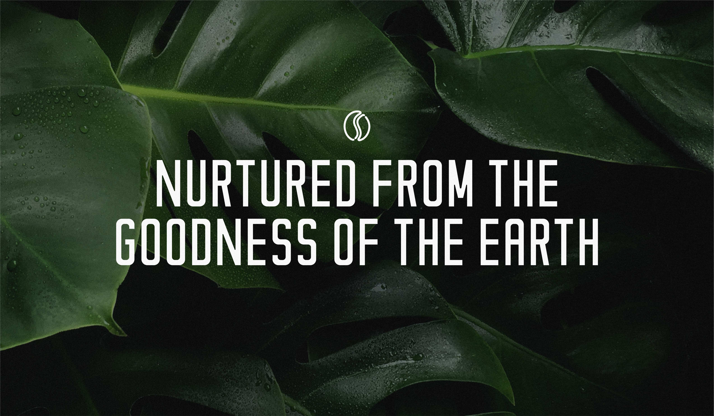
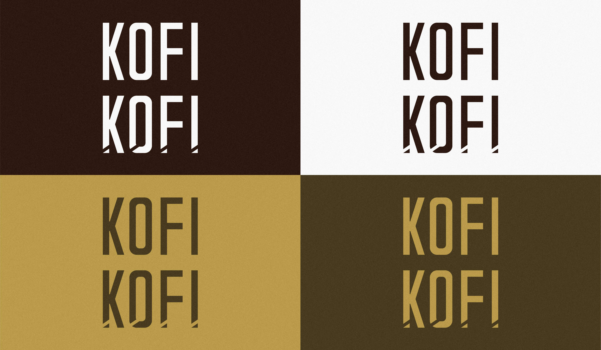
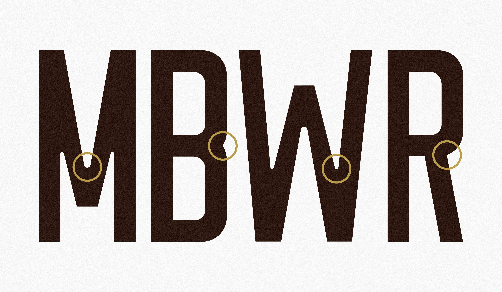
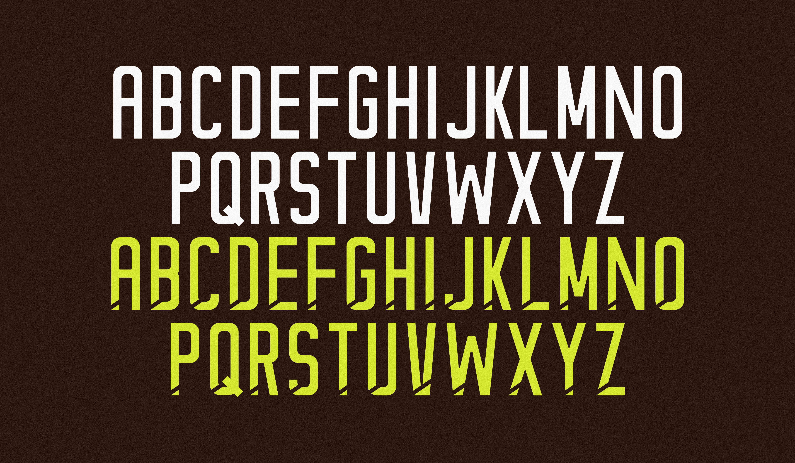
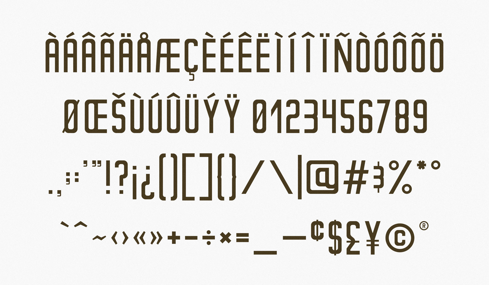
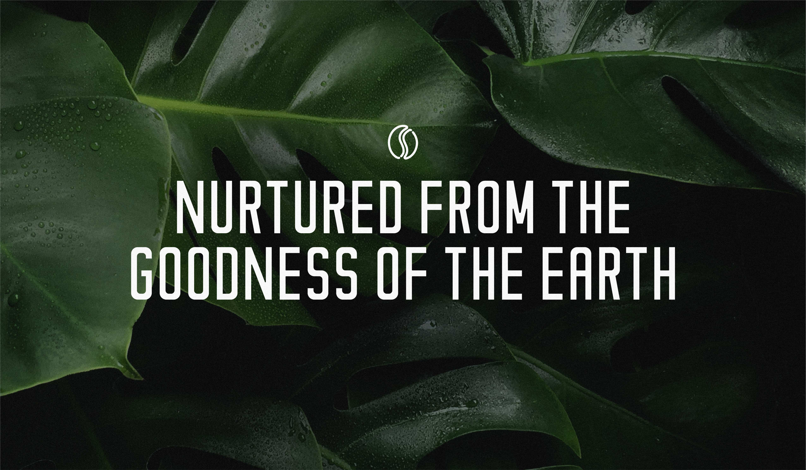
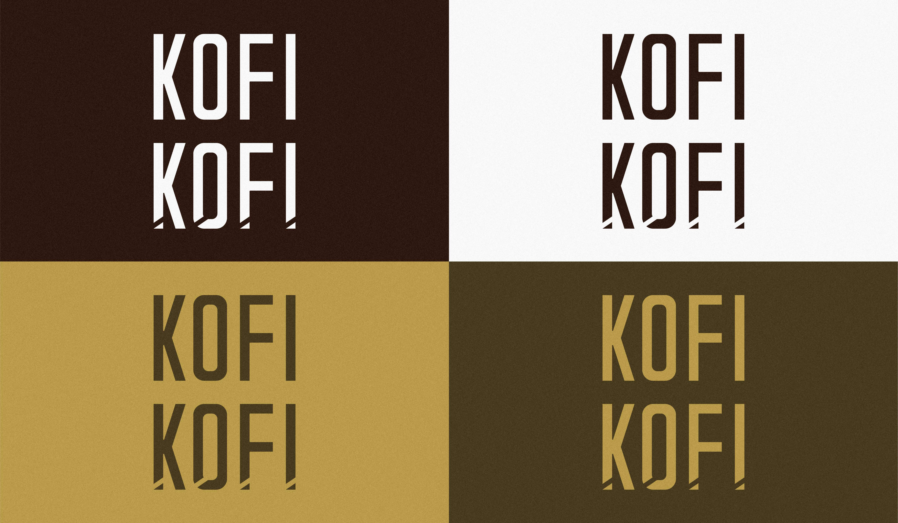
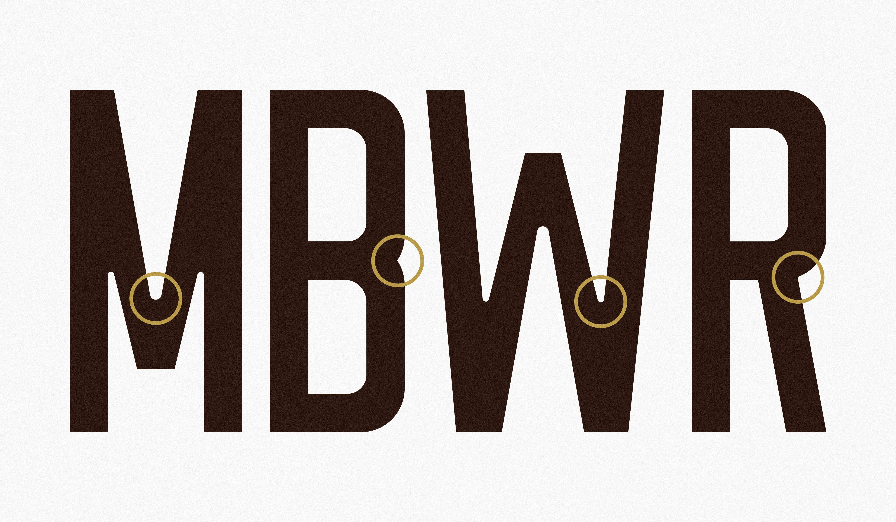
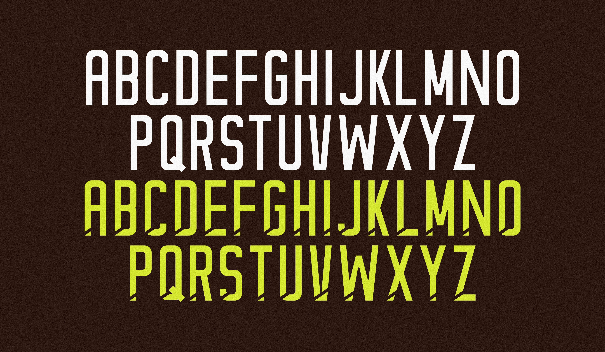
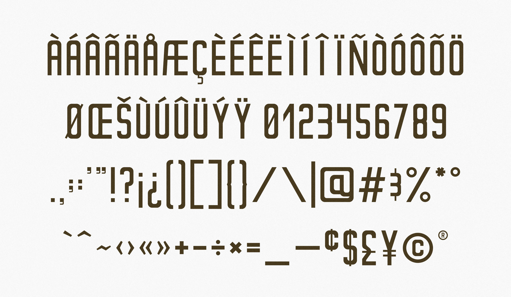